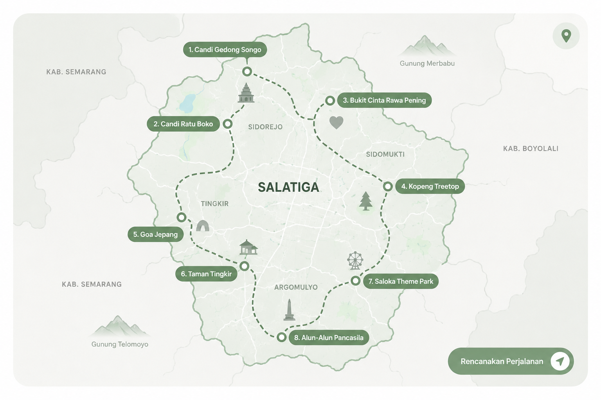

Salatiga terdiri dari 4 kecamatan yang masing-masing memiliki karakteristik unik. Berikut adalah peta interaktif yang menunjukkan pembagian wilayah dan beberapa titik menarik di setiap kecamatan.

Sejarah
Kota Salatiga memiliki kisah sejarah yang panjang. Kota yang sudah berdiri sejak 750M ini telah melewati berbagai peradaban dan budaya, menciptakan identitas unik yang masih terasa hingga kini. Berikut sedikit ringkasan sejarah kota ini.
750 M
Prasasti Plumpungan
Tonggak sejarah Kota Salatiga bermula dari Prasasti Plumpungan yang bertanggal 24 Juli 750 Masehi. Dalam prasasti tersebut disebutkan wilayah "Hampra" yang kemudian dipercaya sebagai asal mula nama Salatiga. Tanggal ini kini diperingati sebagai Hari Jadi Kota Salatiga.
Abad XV–XVII
Pusat Persinggahan Perdagangan
Letaknya yang strategis di antara Semarang, Solo, dan Yogyakarta menjadikan Salatiga sebagai jalur penting perdagangan dan mobilitas masyarakat Jawa. Kawasan ini berkembang sebagai daerah persinggahan yang ramai dan multikultural.
1746
Perjanjian Salatiga
Salatiga menjadi saksi sejarah Perjanjian Salatiga yang melibatkan VOC dan Kerajaan Mataram. Peristiwa ini menjadi bagian penting dalam pembentukan peta politik Jawa pada masa kolonial.
1917
Kota Gemeente Hindia Belanda
Pemerintah Hindia Belanda menetapkan Salatiga sebagai Gemeente atau kota otonom. Pada masa ini dibangun berbagai fasilitas publik, kawasan permukiman Eropa, sekolah, dan infrastruktur yang membentuk karakter kota hingga saat ini.
1950–Sekarang
Kota Pendidikan dan Wisata
Setelah kemerdekaan Indonesia, Salatiga berkembang sebagai kota pendidikan, perdagangan, dan pariwisata. Keberadaan berbagai institusi pendidikan serta lingkungan alam yang sejuk menjadikan Salatiga dikenal sebagai salah satu kota ternyaman di Indonesia.